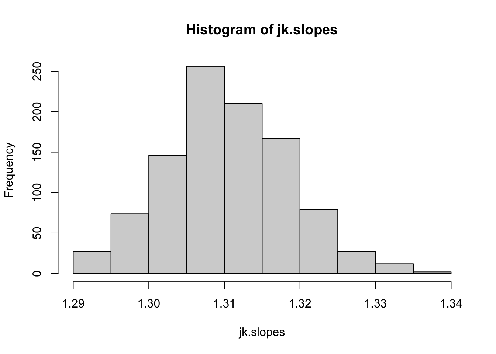

9. Randomizations: Sampling from sets and probability distributions
Dai Shizuka
updated 10/11/22
In this module, we will introduce several functions that are useful for randomization and sampling from distributions. These techniques are broadly used for both statistics as well as simulations, and they are super useful toolkits for you to have in your arsenal for research.
1. Random number generators
sample() and rnorm(). These are two
examples of functions that help you generate random numbers from some
probability distributoin. But if you think about it, there is an
infinate number of ways to sample a random set of numbers1. Understanding these
functions can be really useful in crafting randomization tests,
bootstrapping, and simulations.
Let’s consider some options:
1.1 Sampling from a given set of numbers with or without replacement.
We often want to generate a set of random number given some distribution. Say, for example, we want to sample randomly from a set of numbers. For example, let’s sample 5 integer between 1 and 10.
sample(1:10, 5, replace=F) #5 random numbers between 1 and 10## [1] 2 3 9 4 6You will probably notice that you have generated a different
set of random numbers than what is shown here. This makes sense, but it
makes it difficult to make this code reproducible. What we can
do is to use set.seed() to make this process
repeatable:
set.seed(2) #you can put whatever number inside set.seed()
sample(1:10, 5, replace=F) #5 random numbers between 1 and 10s## [1] 5 6 9 1 10When you run the code like this, you should always get “2, 7, 5, 10,
6”
Try changing the number inside the set.seed() and see what
you get.
Note that we have used replace=F to
indicate that, once we choose a number, we want to avoid choosing it
again. This is akin to physically picking 5 cards out of a set of 10 at
the same time. We can do that up to the sample size, but no more. So,
this will work:
set.seed(2)
sample(1:10, 10, replace=F) #10 random numbers between 1 and 10## [1] 5 6 9 1 10 7 4 8 3 2But this will NOT work:
sample(1:10, 11, replace=F) #11 random numbers between 1 and 10## Error in sample.int(length(x), size, replace, prob): cannot take a sample larger than the population when 'replace = FALSE'In the first iteration, you have simply shuffled the order of the numbers. But you cannot shuffle 11 cards out of a deck of 10.
Compare this to the case when we set replace=TRUE:
set.seed(2)
sample(1:10, 10, replace=T) #10 random numbers between 1 and 10## [1] 5 6 6 8 1 1 9 2 1 3You will notice that we have chose some numbers multiple times (“2”
appears three times, “10” and “6” appear twice). When you set
replace=TRUE, we are basically simulating a situation where
we choose a card, write down the number, and then put it
back before picking up another card. This process is the
essence of a simulation procedure called
bootstrapping.
A quick recap:
sample(x, n)allows you to randomly sample n numbers from the setx.replace=F(default) means once you sample one number, you will not sample it again. You can use this to shuffle the order of numbers (generally called randomization)replace=Tallows for sampling a number more than once. You can use this to resample a set of numbers with equal probability (generally called bootstrapping)
2.2 Sampling from probability distributions
Rather than sampling from a discrete set of numbers, we might want to sample numbers from a given hypothetical distribution. As an illustration, let’s sample a set of 100 numbers from a normal distribution with mean of 0 and standard deviation of 1
set.seed(2)
rn=rnorm(10, mean=0, sd=1)
rn## [1] -0.89691455 0.18484918 1.58784533 -1.13037567 -0.08025176 0.13242028
## [7] 0.70795473 -0.23969802 1.98447394 -0.13878701You can see that it generates numbers with 8 digits. We can generate
a histogram and check to see if the output of the
rnorm() function really looks like a normal distribution.
Let’s do it with 1,000 numbers so that we reduce sampling error.
set.seed(2)
hist(rnorm(1000, mean=0, sd=1), freq=F)
Looks about right.
Now let’s try the same thing but with a uniform distribution of numbers ranging from 0 to 1
set.seed(2)
runif(10, min=0, max=1)## [1] 0.1848823 0.7023740 0.5733263 0.1680519 0.9438393 0.9434750 0.1291590
## [8] 0.8334488 0.4680185 0.5499837hist(runif(1000, min=0, max=1), freq=F)
2.3 Coin-flips
We can use the rbinom() function to simulate coin-flips,
i.e., generating 0s and 1s randomly.
- Flipping the coin 100 times, keeping track of result each time.
set.seed(2)
coin=rbinom(100, 1, prob=0.5) #100 trials of a single flip of the coin
coin## [1] 0 1 1 0 1 1 0 1 0 1 1 0 1 0 0 1 1 0 0 0 1 0 1 0 0 0 0 0 1 0 0 0 1 1 1 1 1
## [38] 0 1 0 1 0 0 0 1 1 1 0 1 1 0 0 1 1 0 1 1 1 1 1 1 1 1 0 1 0 0 0 0 0 0 0 0 0
## [75] 0 1 0 1 0 1 0 1 0 0 0 1 1 0 1 0 1 0 0 1 0 0 0 0 0 0table(coin) #generate a table of results## coin
## 0 1
## 55 45sum(coin)/length(coin) #calculate probability of 1## [1] 0.45- Flipping the coin 100 times, but with skewed probability
set.seed(2)
flip=100
coin4=rbinom(100, 1, prob=0.25)
table(coin4)## coin4
## 0 1
## 72 28- 10 trials of 100 fair coin flips
set.seed(2)
flips=100
coin2=rbinom(10, flips, prob=0.5)
coin2## [1] 48 47 59 45 46 54 50 58 58 522.4 Table of probability distributions
| Distribution | Function to generate numbers |
|---|---|
| Beta | rbeta() |
| Binomial | rbinom() |
| Chi-square | rchisq() |
| Exponential | rexp() |
| Gamma | rgamma() |
| Geometric | rgeom() |
| Logistic | rlogis() |
| Log Normal | rlnorm() |
| Negative Binomial | rnbinom() |
| Normal | rnorm() |
| Poisson | rpois() |
| Uniform | runif() |
| Weibull | rweibull() |
2. Combining apply and/or loops with sample()
2.1. Repeating sample() with a loop or apply
Now that we’ve run through the basics of “apply” functions and
for-loops, let’s try using it to start building the basics of
simulations. To do this, we will combine apply and/or loops with the
super useful function: sample(). Let’s generate a random
sequence of integers from 1 through 10, and do that 5 times. We will
store the result of each iteration in a column of a matrix (the final
matrix should be 10 rows of 5 columns).
times=5
m=matrix(nrow=10, ncol=times)
for (i in 1:times){
m[,i]=sample(1:10, 10, replace=F)
}
m## [,1] [,2] [,3] [,4] [,5]
## [1,] 6 6 2 8 7
## [2,] 9 3 3 4 2
## [3,] 8 1 4 5 6
## [4,] 4 7 9 6 10
## [5,] 3 5 1 10 4
## [6,] 1 10 6 9 8
## [7,] 2 2 5 2 5
## [8,] 5 4 7 1 1
## [9,] 7 9 8 7 9
## [10,] 10 8 10 3 3Now, if you actually did this, you will see that you got a
different result than I did! This is because the
sample() function gives you a different set of results each
time you run it.
If you want reproducible results with randomization procedures like
sample(), you can use a function called
set.seed(). You can put in a number inside this
function–and each time you use the same number, you should get the same
result. Try running this code:
set.seed(2)
times=5
m=matrix(nrow=10, ncol=times)
for (i in 1:times){
m[,i]=sample(1:10, 10, replace=F)
}
m## [,1] [,2] [,3] [,4] [,5]
## [1,] 5 1 6 6 9
## [2,] 6 3 9 2 1
## [3,] 9 6 10 7 2
## [4,] 1 2 5 9 4
## [5,] 10 9 8 3 5
## [6,] 7 10 3 4 6
## [7,] 4 7 1 10 7
## [8,] 8 5 7 1 8
## [9,] 3 4 2 5 10
## [10,] 2 8 4 8 3Now, you should have gotten the exact same results as shown here!
Mini-exercise: What do you think this code will
produce (note where I put the set.seed()
function)
times=5
m=matrix(nrow=times, ncol=10)
for (i in 1:times){
set.seed(2)
m[i,]=sample(1:10, 10, replace=F)
}
mYou can do the same thing with an sapply function. Here,
if you are going to repeat a set of codes 5 times, just put
1:5 as the input to the sapply() function:
set.seed(2)
sapply(1:5, function(x){
sample(1:10, 10, replace=F)
})## [,1] [,2] [,3] [,4] [,5]
## [1,] 5 1 6 6 9
## [2,] 6 3 9 2 1
## [3,] 9 6 10 7 2
## [4,] 1 2 5 9 4
## [5,] 10 9 8 3 5
## [6,] 7 10 3 4 6
## [7,] 4 7 1 10 7
## [8,] 8 5 7 1 8
## [9,] 3 4 2 5 10
## [10,] 2 8 4 8 3If you used the same set.seed(2) command, you should see
that you get the same result!
2.2 Practice with for-loops: What does a P-value mean?
Let’s use the for loop to illustrate a statistical paradigm: the p-value. The p-value is the probability of obtaining a result if the null hypothesis is true. Let’s investigate this case for the p-value generated from a Pearson’s correlation coefficient.
Let’s start by testing the correlation between two random sets of
values drawn from normal distributions. You can do this by using the
functino rnorm(). By default, this will pull X number of
values from a normal distribution with mean = 0 and sd = 1. But you can
set the mean (and sd) to be something different:
rnorm(10, mean=10)## [1] 8.274020 9.097416 9.440938 9.753487 9.616414 8.040897 9.158295
## [8] 11.903547 10.622494 11.990920Use this to generate two distributions with the same mean. Then, do a t-test:
set.seed(2)
r1=rnorm(100, mean=10)
r2=rnorm(100, mean=10)
test=t.test(r1, r2)
test##
## Welch Two Sample t-test
##
## data: r1 and r2
## t = -0.39361, df = 192.94, p-value = 0.6943
## alternative hypothesis: true difference in means is not equal to 0
## 95 percent confidence interval:
## -0.3601323 0.2403067
## sample estimates:
## mean of x mean of y
## 9.969302 10.029215It’s easy to extract the P-value from a t-test:
test$p.value## [1] 0.6943067What we have done is see if two sets of random numbers are correlated. As expected, there is no significant difference in the means.
However, what if we did this test a bunch of times? We should get a “significant correlation” (P<0.05) 5% of the time. Let’s try this and see if that’s true. What we can do is to repeat the above routine a large number of times (here, 10,000x) and ask how often the p-value from that test is less than or equal to 0.05. Let’s run the loop and store the p-values.
times=10000
set.seed(2)
p=vector(length=times)
cor.coefs=vector(length=times)
for(i in 1:times){
r1=rnorm(100)
r2=rnorm(100)
test=t.test(r1,r2)
p[i]=test$p.value
}Now let’s visualize the p-values we generated as a histogram, with a red line where P=0.05 is.
hist(p, breaks=100)
abline(v=0.05, col="red", lwd=2)
So, in theory, about 5%, or 10,000 x 0.05 = 500 of these values should be <=0.05. Let’s see if that’s right:
length(which(p<=0.05))## [1] 491You should have a value close to 500. That is, if you repeat the test 10,000 times on two random sets of numbers, you will get a ‘significant’ result 500 times.
This is a statistical cautionary tale–Even when we set up two fictional distributions to have the same mean and variance, you will get a “significant difference” in their means 5% of the time if you are using P < 0.05 as the criterion for “significance”.
3. Resampling Techniques: Randomization, Bootstrapping, and Jackknifing
In statistics, “resampling” techniques are often used to overcome limitations in inference if you are not sure if your result is due to sampling error. In brief: when we collect data, we end up with the dataset that we have. But what if you conducted the same study again: how likely would you be to get the same answer? Broadly speaking, you can ask this question (to some degree) by “resampling” your data. There are three basic flavors of resampling:
Randomization, or Permutation is when you resample all of the data that you have, but in randomized order.
Bootstrapping is when you randomly resample all observed values, but with replacement. This procedure essentially simulates sampling error and is useful when you can make the assumption that your sample generally represents the true distribution, but you want to account for sampling error. It is often used when you just have one set of samples, but you want to simulate a situation where you had a large set of samples with the same underlying distribution of values (but with different sampling error).
Jackknifing is when you randomly subsample some of your observations. This procedure is useful when you have a sufficiently large dataset, but you want to test the stability of your metric (i.e., what is the range of values might your estimate take if you were missing some data). For example, you might use this procedure to generate a confidence interval around your metric of interest.
![2x2 classification of resampling strategies, from Rodgers 1999 [^2]](images/Rodgers1999_Fig1.png)
2x2 classification of resampling strategies, from Rodgers 1999 2
3.1. Correlation test with randomization/permutation
3.3.1. Pearson correlation example using trees data
head(trees)## Girth Height Volume
## 1 8.3 70 10.3
## 2 8.6 65 10.3
## 3 8.8 63 10.2
## 4 10.5 72 16.4
## 5 10.7 81 18.8
## 6 10.8 83 19.7plot(Height~Girth, data=trees, pch=19)
cor.test(trees$Girth,trees$Height)##
## Pearson's product-moment correlation
##
## data: trees$Girth and trees$Height
## t = 3.2722, df = 29, p-value = 0.002758
## alternative hypothesis: true correlation is not equal to 0
## 95 percent confidence interval:
## 0.2021327 0.7378538
## sample estimates:
## cor
## 0.5192801P-value = 0.0028
3.1.2. Now calculate P-value with randomization/permutation test
obs.cor=cor(trees$Girth,trees$Height)
obs.cor## [1] 0.5192801rep=10000
rand.cor=vector(length=rep)
for(i in 1:rep){
randHeight=sample(trees$Height, length(trees$Height), replace=F)
rand.cor[i]=cor(trees$Girth, randHeight)
}
hist(rand.cor, xlim=c(-1,1))
abline(v=obs.cor, lty=2, col="red") Now, we can calculate a P-value from a randomization test in two ways: A
one-tailed test, or two-tailed test. A one-tailed test
tests the hypothesis with a specific directionality of an effect. For
example, that the observed correlation coefficient is specifically MORE
POSITIVE than random expectation. In contrast, a two-tailed
test would test the hypothesis that the absolute value of the
observed correlation coefficient is larger than the distribution of
absolute values generated by random chance. The standard Pearson’s
correlation test above generates the P-value for the two-tailed test.
Here, we can do either:
Now, we can calculate a P-value from a randomization test in two ways: A
one-tailed test, or two-tailed test. A one-tailed test
tests the hypothesis with a specific directionality of an effect. For
example, that the observed correlation coefficient is specifically MORE
POSITIVE than random expectation. In contrast, a two-tailed
test would test the hypothesis that the absolute value of the
observed correlation coefficient is larger than the distribution of
absolute values generated by random chance. The standard Pearson’s
correlation test above generates the P-value for the two-tailed test.
Here, we can do either:
p.onetail=length(which(rand.cor>=obs.cor))/rep
p.onetail## [1] 0.0014p.twotail=length(which(abs(rand.cor)>=abs(obs.cor)))/rep
p.twotail## [1] 0.0028We should get a very similar P-value to the original correlation test (P = 0.0028)
3.2. Resampling with bootstrapping vs. jackknifing
library(tidyverse)## ── Attaching packages ─────────────────────────────────────── tidyverse 1.3.2 ──
## ✔ ggplot2 3.3.6 ✔ purrr 0.3.4
## ✔ tibble 3.1.8 ✔ dplyr 1.0.10
## ✔ tidyr 1.2.1 ✔ stringr 1.4.1
## ✔ readr 2.1.2 ✔ forcats 0.5.2
## ── Conflicts ────────────────────────────────────────── tidyverse_conflicts() ──
## ✖ dplyr::filter() masks stats::filter()
## ✖ dplyr::lag() masks stats::lag()co2## Jan Feb Mar Apr May Jun Jul Aug Sep Oct
## 1959 315.42 316.31 316.50 317.56 318.13 318.00 316.39 314.65 313.68 313.18
## 1960 316.27 316.81 317.42 318.87 319.87 319.43 318.01 315.74 314.00 313.68
## 1961 316.73 317.54 318.38 319.31 320.42 319.61 318.42 316.63 314.83 315.16
## 1962 317.78 318.40 319.53 320.42 320.85 320.45 319.45 317.25 316.11 315.27
## 1963 318.58 318.92 319.70 321.22 322.08 321.31 319.58 317.61 316.05 315.83
## 1964 319.41 320.07 320.74 321.40 322.06 321.73 320.27 318.54 316.54 316.71
## 1965 319.27 320.28 320.73 321.97 322.00 321.71 321.05 318.71 317.66 317.14
## 1966 320.46 321.43 322.23 323.54 323.91 323.59 322.24 320.20 318.48 317.94
## 1967 322.17 322.34 322.88 324.25 324.83 323.93 322.38 320.76 319.10 319.24
## 1968 322.40 322.99 323.73 324.86 325.40 325.20 323.98 321.95 320.18 320.09
## 1969 323.83 324.26 325.47 326.50 327.21 326.54 325.72 323.50 322.22 321.62
## 1970 324.89 325.82 326.77 327.97 327.91 327.50 326.18 324.53 322.93 322.90
## 1971 326.01 326.51 327.01 327.62 328.76 328.40 327.20 325.27 323.20 323.40
## 1972 326.60 327.47 327.58 329.56 329.90 328.92 327.88 326.16 324.68 325.04
## 1973 328.37 329.40 330.14 331.33 332.31 331.90 330.70 329.15 327.35 327.02
## 1974 329.18 330.55 331.32 332.48 332.92 332.08 331.01 329.23 327.27 327.21
## 1975 330.23 331.25 331.87 333.14 333.80 333.43 331.73 329.90 328.40 328.17
## 1976 331.58 332.39 333.33 334.41 334.71 334.17 332.89 330.77 329.14 328.78
## 1977 332.75 333.24 334.53 335.90 336.57 336.10 334.76 332.59 331.42 330.98
## 1978 334.80 335.22 336.47 337.59 337.84 337.72 336.37 334.51 332.60 332.38
## 1979 336.05 336.59 337.79 338.71 339.30 339.12 337.56 335.92 333.75 333.70
## 1980 337.84 338.19 339.91 340.60 341.29 341.00 339.39 337.43 335.72 335.84
## 1981 339.06 340.30 341.21 342.33 342.74 342.08 340.32 338.26 336.52 336.68
## 1982 340.57 341.44 342.53 343.39 343.96 343.18 341.88 339.65 337.81 337.69
## 1983 341.20 342.35 342.93 344.77 345.58 345.14 343.81 342.21 339.69 339.82
## 1984 343.52 344.33 345.11 346.88 347.25 346.62 345.22 343.11 340.90 341.18
## 1985 344.79 345.82 347.25 348.17 348.74 348.07 346.38 344.51 342.92 342.62
## 1986 346.11 346.78 347.68 349.37 350.03 349.37 347.76 345.73 344.68 343.99
## 1987 347.84 348.29 349.23 350.80 351.66 351.07 349.33 347.92 346.27 346.18
## 1988 350.25 351.54 352.05 353.41 354.04 353.62 352.22 350.27 348.55 348.72
## 1989 352.60 352.92 353.53 355.26 355.52 354.97 353.75 351.52 349.64 349.83
## 1990 353.50 354.55 355.23 356.04 357.00 356.07 354.67 352.76 350.82 351.04
## 1991 354.59 355.63 357.03 358.48 359.22 358.12 356.06 353.92 352.05 352.11
## 1992 355.88 356.63 357.72 359.07 359.58 359.17 356.94 354.92 352.94 353.23
## 1993 356.63 357.10 358.32 359.41 360.23 359.55 357.53 355.48 353.67 353.95
## 1994 358.34 358.89 359.95 361.25 361.67 360.94 359.55 357.49 355.84 356.00
## 1995 359.98 361.03 361.66 363.48 363.82 363.30 361.94 359.50 358.11 357.80
## 1996 362.09 363.29 364.06 364.76 365.45 365.01 363.70 361.54 359.51 359.65
## 1997 363.23 364.06 364.61 366.40 366.84 365.68 364.52 362.57 360.24 360.83
## Nov Dec
## 1959 314.66 315.43
## 1960 314.84 316.03
## 1961 315.94 316.85
## 1962 316.53 317.53
## 1963 316.91 318.20
## 1964 317.53 318.55
## 1965 318.70 319.25
## 1966 319.63 320.87
## 1967 320.56 321.80
## 1968 321.16 322.74
## 1969 322.69 323.95
## 1970 323.85 324.96
## 1971 324.63 325.85
## 1972 326.34 327.39
## 1973 327.99 328.48
## 1974 328.29 329.41
## 1975 329.32 330.59
## 1976 330.14 331.52
## 1977 332.24 333.68
## 1978 333.75 334.78
## 1979 335.12 336.56
## 1980 336.93 338.04
## 1981 338.19 339.44
## 1982 339.09 340.32
## 1983 340.98 342.82
## 1984 342.80 344.04
## 1985 344.06 345.38
## 1986 345.48 346.72
## 1987 347.64 348.78
## 1988 349.91 351.18
## 1989 351.14 352.37
## 1990 352.69 354.07
## 1991 353.64 354.89
## 1992 354.09 355.33
## 1993 355.30 356.78
## 1994 357.59 359.05
## 1995 359.61 360.74
## 1996 360.80 362.38
## 1997 362.49 364.34Convert this time series into a data frame (manually)
years=1959:1997
months=1:12
co2.dat=data.frame(expand.grid(months, years), as.numeric(co2))
names(co2.dat)=c("month", "year", "value")
co2.dat## month year value
## 1 1 1959 315.42
## 2 2 1959 316.31
## 3 3 1959 316.50
## 4 4 1959 317.56
## 5 5 1959 318.13
## 6 6 1959 318.00
## 7 7 1959 316.39
## 8 8 1959 314.65
## 9 9 1959 313.68
## 10 10 1959 313.18
## 11 11 1959 314.66
## 12 12 1959 315.43
## 13 1 1960 316.27
## 14 2 1960 316.81
## 15 3 1960 317.42
## 16 4 1960 318.87
## 17 5 1960 319.87
## 18 6 1960 319.43
## 19 7 1960 318.01
## 20 8 1960 315.74
## 21 9 1960 314.00
## 22 10 1960 313.68
## 23 11 1960 314.84
## 24 12 1960 316.03
## 25 1 1961 316.73
## 26 2 1961 317.54
## 27 3 1961 318.38
## 28 4 1961 319.31
## 29 5 1961 320.42
## 30 6 1961 319.61
## 31 7 1961 318.42
## 32 8 1961 316.63
## 33 9 1961 314.83
## 34 10 1961 315.16
## 35 11 1961 315.94
## 36 12 1961 316.85
## 37 1 1962 317.78
## 38 2 1962 318.40
## 39 3 1962 319.53
## 40 4 1962 320.42
## 41 5 1962 320.85
## 42 6 1962 320.45
## 43 7 1962 319.45
## 44 8 1962 317.25
## 45 9 1962 316.11
## 46 10 1962 315.27
## 47 11 1962 316.53
## 48 12 1962 317.53
## 49 1 1963 318.58
## 50 2 1963 318.92
## 51 3 1963 319.70
## 52 4 1963 321.22
## 53 5 1963 322.08
## 54 6 1963 321.31
## 55 7 1963 319.58
## 56 8 1963 317.61
## 57 9 1963 316.05
## 58 10 1963 315.83
## 59 11 1963 316.91
## 60 12 1963 318.20
## 61 1 1964 319.41
## 62 2 1964 320.07
## 63 3 1964 320.74
## 64 4 1964 321.40
## 65 5 1964 322.06
## 66 6 1964 321.73
## 67 7 1964 320.27
## 68 8 1964 318.54
## 69 9 1964 316.54
## 70 10 1964 316.71
## 71 11 1964 317.53
## 72 12 1964 318.55
## 73 1 1965 319.27
## 74 2 1965 320.28
## 75 3 1965 320.73
## 76 4 1965 321.97
## 77 5 1965 322.00
## 78 6 1965 321.71
## 79 7 1965 321.05
## 80 8 1965 318.71
## 81 9 1965 317.66
## 82 10 1965 317.14
## 83 11 1965 318.70
## 84 12 1965 319.25
## 85 1 1966 320.46
## 86 2 1966 321.43
## 87 3 1966 322.23
## 88 4 1966 323.54
## 89 5 1966 323.91
## 90 6 1966 323.59
## 91 7 1966 322.24
## 92 8 1966 320.20
## 93 9 1966 318.48
## 94 10 1966 317.94
## 95 11 1966 319.63
## 96 12 1966 320.87
## 97 1 1967 322.17
## 98 2 1967 322.34
## 99 3 1967 322.88
## 100 4 1967 324.25
## 101 5 1967 324.83
## 102 6 1967 323.93
## 103 7 1967 322.38
## 104 8 1967 320.76
## 105 9 1967 319.10
## 106 10 1967 319.24
## 107 11 1967 320.56
## 108 12 1967 321.80
## 109 1 1968 322.40
## 110 2 1968 322.99
## 111 3 1968 323.73
## 112 4 1968 324.86
## 113 5 1968 325.40
## 114 6 1968 325.20
## 115 7 1968 323.98
## 116 8 1968 321.95
## 117 9 1968 320.18
## 118 10 1968 320.09
## 119 11 1968 321.16
## 120 12 1968 322.74
## 121 1 1969 323.83
## 122 2 1969 324.26
## 123 3 1969 325.47
## 124 4 1969 326.50
## 125 5 1969 327.21
## 126 6 1969 326.54
## 127 7 1969 325.72
## 128 8 1969 323.50
## 129 9 1969 322.22
## 130 10 1969 321.62
## 131 11 1969 322.69
## 132 12 1969 323.95
## 133 1 1970 324.89
## 134 2 1970 325.82
## 135 3 1970 326.77
## 136 4 1970 327.97
## 137 5 1970 327.91
## 138 6 1970 327.50
## 139 7 1970 326.18
## 140 8 1970 324.53
## 141 9 1970 322.93
## 142 10 1970 322.90
## 143 11 1970 323.85
## 144 12 1970 324.96
## 145 1 1971 326.01
## 146 2 1971 326.51
## 147 3 1971 327.01
## 148 4 1971 327.62
## 149 5 1971 328.76
## 150 6 1971 328.40
## 151 7 1971 327.20
## 152 8 1971 325.27
## 153 9 1971 323.20
## 154 10 1971 323.40
## 155 11 1971 324.63
## 156 12 1971 325.85
## 157 1 1972 326.60
## 158 2 1972 327.47
## 159 3 1972 327.58
## 160 4 1972 329.56
## 161 5 1972 329.90
## 162 6 1972 328.92
## 163 7 1972 327.88
## 164 8 1972 326.16
## 165 9 1972 324.68
## 166 10 1972 325.04
## 167 11 1972 326.34
## 168 12 1972 327.39
## 169 1 1973 328.37
## 170 2 1973 329.40
## 171 3 1973 330.14
## 172 4 1973 331.33
## 173 5 1973 332.31
## 174 6 1973 331.90
## 175 7 1973 330.70
## 176 8 1973 329.15
## 177 9 1973 327.35
## 178 10 1973 327.02
## 179 11 1973 327.99
## 180 12 1973 328.48
## 181 1 1974 329.18
## 182 2 1974 330.55
## 183 3 1974 331.32
## 184 4 1974 332.48
## 185 5 1974 332.92
## 186 6 1974 332.08
## 187 7 1974 331.01
## 188 8 1974 329.23
## 189 9 1974 327.27
## 190 10 1974 327.21
## 191 11 1974 328.29
## 192 12 1974 329.41
## 193 1 1975 330.23
## 194 2 1975 331.25
## 195 3 1975 331.87
## 196 4 1975 333.14
## 197 5 1975 333.80
## 198 6 1975 333.43
## 199 7 1975 331.73
## 200 8 1975 329.90
## 201 9 1975 328.40
## 202 10 1975 328.17
## 203 11 1975 329.32
## 204 12 1975 330.59
## 205 1 1976 331.58
## 206 2 1976 332.39
## 207 3 1976 333.33
## 208 4 1976 334.41
## 209 5 1976 334.71
## 210 6 1976 334.17
## 211 7 1976 332.89
## 212 8 1976 330.77
## 213 9 1976 329.14
## 214 10 1976 328.78
## 215 11 1976 330.14
## 216 12 1976 331.52
## 217 1 1977 332.75
## 218 2 1977 333.24
## 219 3 1977 334.53
## 220 4 1977 335.90
## 221 5 1977 336.57
## 222 6 1977 336.10
## 223 7 1977 334.76
## 224 8 1977 332.59
## 225 9 1977 331.42
## 226 10 1977 330.98
## 227 11 1977 332.24
## 228 12 1977 333.68
## 229 1 1978 334.80
## 230 2 1978 335.22
## 231 3 1978 336.47
## 232 4 1978 337.59
## 233 5 1978 337.84
## 234 6 1978 337.72
## 235 7 1978 336.37
## 236 8 1978 334.51
## 237 9 1978 332.60
## 238 10 1978 332.38
## 239 11 1978 333.75
## 240 12 1978 334.78
## 241 1 1979 336.05
## 242 2 1979 336.59
## 243 3 1979 337.79
## 244 4 1979 338.71
## 245 5 1979 339.30
## 246 6 1979 339.12
## 247 7 1979 337.56
## 248 8 1979 335.92
## 249 9 1979 333.75
## 250 10 1979 333.70
## 251 11 1979 335.12
## 252 12 1979 336.56
## 253 1 1980 337.84
## 254 2 1980 338.19
## 255 3 1980 339.91
## 256 4 1980 340.60
## 257 5 1980 341.29
## 258 6 1980 341.00
## 259 7 1980 339.39
## 260 8 1980 337.43
## 261 9 1980 335.72
## 262 10 1980 335.84
## 263 11 1980 336.93
## 264 12 1980 338.04
## 265 1 1981 339.06
## 266 2 1981 340.30
## 267 3 1981 341.21
## 268 4 1981 342.33
## 269 5 1981 342.74
## 270 6 1981 342.08
## 271 7 1981 340.32
## 272 8 1981 338.26
## 273 9 1981 336.52
## 274 10 1981 336.68
## 275 11 1981 338.19
## 276 12 1981 339.44
## 277 1 1982 340.57
## 278 2 1982 341.44
## 279 3 1982 342.53
## 280 4 1982 343.39
## 281 5 1982 343.96
## 282 6 1982 343.18
## 283 7 1982 341.88
## 284 8 1982 339.65
## 285 9 1982 337.81
## 286 10 1982 337.69
## 287 11 1982 339.09
## 288 12 1982 340.32
## 289 1 1983 341.20
## 290 2 1983 342.35
## 291 3 1983 342.93
## 292 4 1983 344.77
## 293 5 1983 345.58
## 294 6 1983 345.14
## 295 7 1983 343.81
## 296 8 1983 342.21
## 297 9 1983 339.69
## 298 10 1983 339.82
## 299 11 1983 340.98
## 300 12 1983 342.82
## 301 1 1984 343.52
## 302 2 1984 344.33
## 303 3 1984 345.11
## 304 4 1984 346.88
## 305 5 1984 347.25
## 306 6 1984 346.62
## 307 7 1984 345.22
## 308 8 1984 343.11
## 309 9 1984 340.90
## 310 10 1984 341.18
## 311 11 1984 342.80
## 312 12 1984 344.04
## 313 1 1985 344.79
## 314 2 1985 345.82
## 315 3 1985 347.25
## 316 4 1985 348.17
## 317 5 1985 348.74
## 318 6 1985 348.07
## 319 7 1985 346.38
## 320 8 1985 344.51
## 321 9 1985 342.92
## 322 10 1985 342.62
## 323 11 1985 344.06
## 324 12 1985 345.38
## 325 1 1986 346.11
## 326 2 1986 346.78
## 327 3 1986 347.68
## 328 4 1986 349.37
## 329 5 1986 350.03
## 330 6 1986 349.37
## 331 7 1986 347.76
## 332 8 1986 345.73
## 333 9 1986 344.68
## 334 10 1986 343.99
## 335 11 1986 345.48
## 336 12 1986 346.72
## 337 1 1987 347.84
## 338 2 1987 348.29
## 339 3 1987 349.23
## 340 4 1987 350.80
## 341 5 1987 351.66
## 342 6 1987 351.07
## 343 7 1987 349.33
## 344 8 1987 347.92
## 345 9 1987 346.27
## 346 10 1987 346.18
## 347 11 1987 347.64
## 348 12 1987 348.78
## 349 1 1988 350.25
## 350 2 1988 351.54
## 351 3 1988 352.05
## 352 4 1988 353.41
## 353 5 1988 354.04
## 354 6 1988 353.62
## 355 7 1988 352.22
## 356 8 1988 350.27
## 357 9 1988 348.55
## 358 10 1988 348.72
## 359 11 1988 349.91
## 360 12 1988 351.18
## 361 1 1989 352.60
## 362 2 1989 352.92
## 363 3 1989 353.53
## 364 4 1989 355.26
## 365 5 1989 355.52
## 366 6 1989 354.97
## 367 7 1989 353.75
## 368 8 1989 351.52
## 369 9 1989 349.64
## 370 10 1989 349.83
## 371 11 1989 351.14
## 372 12 1989 352.37
## 373 1 1990 353.50
## 374 2 1990 354.55
## 375 3 1990 355.23
## 376 4 1990 356.04
## 377 5 1990 357.00
## 378 6 1990 356.07
## 379 7 1990 354.67
## 380 8 1990 352.76
## 381 9 1990 350.82
## 382 10 1990 351.04
## 383 11 1990 352.69
## 384 12 1990 354.07
## 385 1 1991 354.59
## 386 2 1991 355.63
## 387 3 1991 357.03
## 388 4 1991 358.48
## 389 5 1991 359.22
## 390 6 1991 358.12
## 391 7 1991 356.06
## 392 8 1991 353.92
## 393 9 1991 352.05
## 394 10 1991 352.11
## 395 11 1991 353.64
## 396 12 1991 354.89
## 397 1 1992 355.88
## 398 2 1992 356.63
## 399 3 1992 357.72
## 400 4 1992 359.07
## 401 5 1992 359.58
## 402 6 1992 359.17
## 403 7 1992 356.94
## 404 8 1992 354.92
## 405 9 1992 352.94
## 406 10 1992 353.23
## 407 11 1992 354.09
## 408 12 1992 355.33
## 409 1 1993 356.63
## 410 2 1993 357.10
## 411 3 1993 358.32
## 412 4 1993 359.41
## 413 5 1993 360.23
## 414 6 1993 359.55
## 415 7 1993 357.53
## 416 8 1993 355.48
## 417 9 1993 353.67
## 418 10 1993 353.95
## 419 11 1993 355.30
## 420 12 1993 356.78
## 421 1 1994 358.34
## 422 2 1994 358.89
## 423 3 1994 359.95
## 424 4 1994 361.25
## 425 5 1994 361.67
## 426 6 1994 360.94
## 427 7 1994 359.55
## 428 8 1994 357.49
## 429 9 1994 355.84
## 430 10 1994 356.00
## 431 11 1994 357.59
## 432 12 1994 359.05
## 433 1 1995 359.98
## 434 2 1995 361.03
## 435 3 1995 361.66
## 436 4 1995 363.48
## 437 5 1995 363.82
## 438 6 1995 363.30
## 439 7 1995 361.94
## 440 8 1995 359.50
## 441 9 1995 358.11
## 442 10 1995 357.80
## 443 11 1995 359.61
## 444 12 1995 360.74
## 445 1 1996 362.09
## 446 2 1996 363.29
## 447 3 1996 364.06
## 448 4 1996 364.76
## 449 5 1996 365.45
## 450 6 1996 365.01
## 451 7 1996 363.70
## 452 8 1996 361.54
## 453 9 1996 359.51
## 454 10 1996 359.65
## 455 11 1996 360.80
## 456 12 1996 362.38
## 457 1 1997 363.23
## 458 2 1997 364.06
## 459 3 1997 364.61
## 460 4 1997 366.40
## 461 5 1997 366.84
## 462 6 1997 365.68
## 463 7 1997 364.52
## 464 8 1997 362.57
## 465 9 1997 360.24
## 466 10 1997 360.83
## 467 11 1997 362.49
## 468 12 1997 364.34co2.annual=co2.dat %>% group_by(year) %>% summarise(year.mean=mean(value))
co2.annual## # A tibble: 39 × 2
## year year.mean
## <int> <dbl>
## 1 1959 316.
## 2 1960 317.
## 3 1961 317.
## 4 1962 318.
## 5 1963 319.
## 6 1964 319.
## 7 1965 320.
## 8 1966 321.
## 9 1967 322.
## 10 1968 323.
## # … with 29 more rowsggplot(co2.annual, aes(x=year, y=year.mean))+ geom_line() + geom_point()
Calculate slope of this relationship from observed data:
lm.fit=(lm(year.mean~year, data=co2.annual))
summary(lm.fit)##
## Call:
## lm(formula = year.mean ~ year, data = co2.annual)
##
## Residuals:
## Min 1Q Median 3Q Max
## -2.4467 -1.1919 -0.5012 1.2712 3.6718
##
## Coefficients:
## Estimate Std. Error t value Pr(>|t|)
## (Intercept) -2.255e+03 4.586e+01 -49.17 <2e-16 ***
## year 1.310e+00 2.319e-02 56.52 <2e-16 ***
## ---
## Signif. codes: 0 '***' 0.001 '**' 0.01 '*' 0.05 '.' 0.1 ' ' 1
##
## Residual standard error: 1.63 on 37 degrees of freedom
## Multiple R-squared: 0.9885, Adjusted R-squared: 0.9882
## F-statistic: 3194 on 1 and 37 DF, p-value: < 2.2e-16obs.slope=summary(lm.fit)$coefficients[2,1]
obs.slope## [1] 1.310499This means that the CO2 level is rising by about 1.3 units per year
One iteration of a bootstrap procedure:
co2.boot=co2.dat %>% group_by(year) %>%
summarise(mean.boot=mean(sample(value, 12, replace=T)))
ggplot(co2.boot, aes(x=year, y=mean.boot))+ geom_line() + geom_point()Do this 1,000 times to generate confidence interval for the slope:
times=1000
boot.fits=list()
for(i in 1:times){
co2.boot=co2.dat %>% group_by(year) %>%
summarise(mean.boot=mean(sample(value, 12, replace=T)))
boot.fits[[i]]=lm(mean.boot~year, data=co2.boot)
}
boot.slopes=sapply(boot.fits, function(x) summary(x)$coefficients[2,1])
hist(boot.slopes)ci.slopes.boot=quantile(boot.slopes, probs=c(0.025, 0.975))
ci.slopes.boot## 2.5% 97.5%
## 1.295324 1.325360Now do the same with a jackknife procedure:
times=1000
jk.fits=list()
for(i in 1:times){
co2.jk=co2.dat %>% group_by(year) %>%
summarise(mean.jk=mean(sample(value, 6, replace=F)))
jk.fits[[i]]=lm(mean.jk~year, data=co2.jk)
}
jk.slopes=sapply(jk.fits, function(x) summary(x)$coefficients[2,1])
hist(jk.slopes)
ci.slopes.jk=quantile(jk.slopes, probs=c(0.025, 0.975))
ci.slopes.jk## 2.5% 97.5%
## 1.294638 1.326292Strictly speaking, we can only generate pseudo-random numbers–the computer can use an algorithm that generates numbers that are indistinguishable from random, but it is not truly random as long as we are using some algorithm to generate it.↩︎
Rodgers, J. L. (1999). The bootstrap, the jackknife, and the randomization test: A sampling taxonomy. Multivariate behavioral research, 34(4), 441-456.↩︎